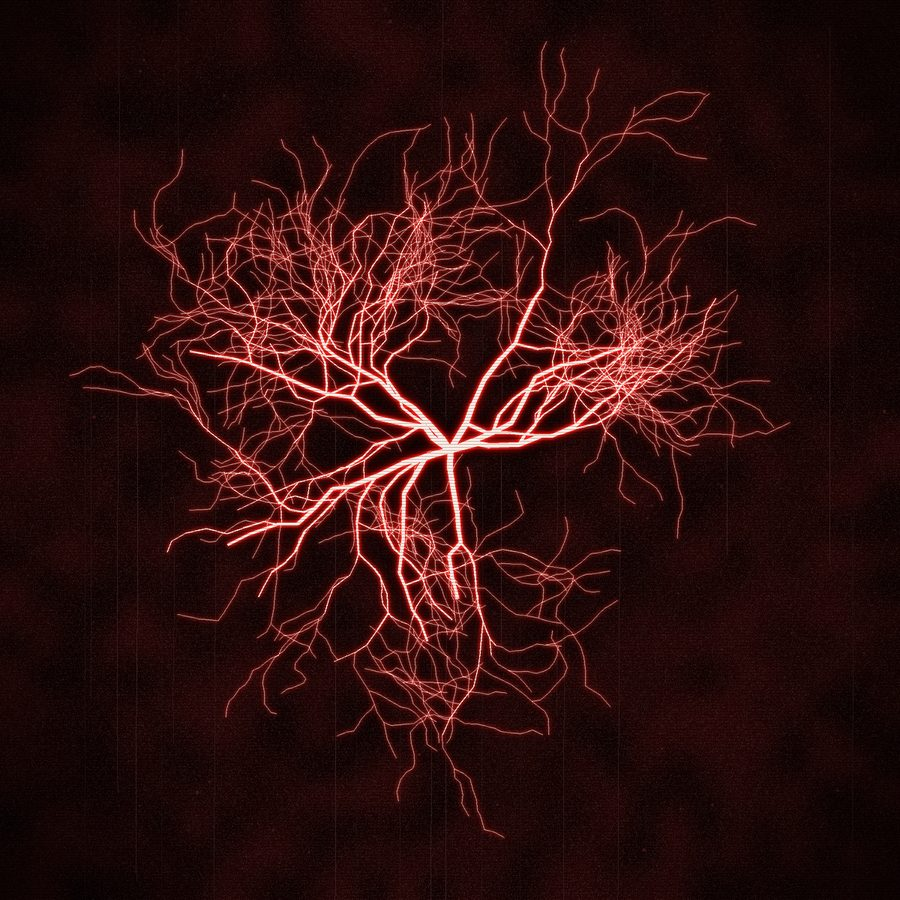

Попробуй прямо сейчас: один клик, и
она открыта в браузере, ничего ставить не нужно; нажми PLAY, заиграет демо-песня. В DAW она работает в бесплатном
плагине VIBE FM: перетащи kriechstrom.zip на его окно.

Выглядит так же, как звучит
Выкрути DAMAGE, и картинка рвётся на каждой бочке. WALL кладёт кирпичи, HISS сыплет зерно, а за каждой страницей в такт барабанам растут молнии. Каждый эффект и каждая педаль показывают вживую, что делают со звуком. Слишком много? MENU > DISPLAY приглушит.
Тот же момент: четыре дорожки с самого начала, DAMAGE, CHAR, HISS и WALL постепенно выкручены.


Клик по экрану покажет его крупно, дальше листай. Все страницы есть в мануале.

Сцена: вся машина на втором, большом экране, все четыре паттерна и мастер сразу. В плеере хаба: View > Stage.

Kriechstrom по-немецки ток утечки: он ползёт по стареющей изоляции и оставляет ветвистый след, как этот, фигуру Лихтенберга. На VIBE она растёт за каждой страницей, пока мастер изнашивает микс.
Что внутри
- Тринадцать педалей, по три на каждой дорожке. Фузз, мафф, крош, смэш, DAMG, который жрёт сигнал, и INFCT, через который одна дорожка говорит голосом другой. Каждая своя коробка со своим маленьким экраном.
- Шестнадцать эффектов под пальцами. Остановка плёнки, заморозка, заикание, крош-свип, флэнжер, октава вниз: зажал пэд, отпустил, и ты снова в доле. Какой эффект на каком пэде, решаешь сам.
- DICE, когда застрял. Один пэд пишет дорожке новую партию в одном из восьми настроений, от MACHINE до HUSH. Каждое нажатие новая; OOPS так же встряхивает звук.
- Мастер, который красиво разваливается. DAMAGE, WALL, RESONATE, SPLICE, HAUNT, HISS: зажёванная плёнка, микс, вбитый в стену звука, струны, звенящие в тон, плёнка, разрезанная и склеенная не так.
- Сэмплируй что угодно, подключай что угодно. Запиши микс или гитару на пару тактов и играй нарезкой по её же ударам. Пропусти гитару или голос через весь мастер, пусть барабаны их рубят.
- Сохраняй и выноси. 32 проекта и файлы, чтобы ими делиться. В DAW каждая дорожка на свой выход, MIDI и CV на остальное железо, ножная педаль на DAMAGE.
Шпаргалка
На устройстве то же самое для текущей страницы показывает HOME. Энкодеры 1-4 всегда крутят четыре значения над F1-F4; < > листают страницы группы, её кнопка (SOUND .. SEQ) ещё раз делает то же.
Везде
| клавиши | играют выбранную дорожку |
| пэды 1-4 | мьют T1-T4 (SHIFT: соло; ещё раз: всё обратно) |
| пэды 5-8 | DICE: новая партия этой дорожке (SHIFT: OOPS ей); на MASTER: DAMAGE, WALL, SPLICE, HAUNT вкл/выкл; на педалборде: педаль 1-3 в обход, 4 все |
| пэды 9-16 | держать эффект: 1/16, TAPE STOP, FREEZE, GATE, CRUSH SWEEP, OCT DOWN, FLANGER, RANDOM (SHIFT: ROLL, REV THROW, ECHO THROW, LPF, HPF, OCT UP, PHASER, 1/32); какой на каком, выбирается в MENU > PAD FX |
| A / B | уровень дорожки / DAMAGE (SHIFT + B: WALL) |
| DATA | своя ручка каждой страницы: на SOUND звуки; SHIFT + DATA на любой странице SOUND: движок; на списке (PROJECTS, FILES, PARTS, MY SOUNDS, SONG, AUTOMATION, MOD, MENU) список; на SEQ шаг; на педалборде педаль; на MIXER уровень выбранной дорожки; на всех остальных карточка с меткой DATA (та, что крутили последней; клик по DATA, то есть ENTER, переводит на следующую) |
| F1-F4 / F5 / F6 | выбор дорожки / действие страницы / UNDO |
| SHIFT | держать, или тапнуть: включится для следующего контрола (на весь поворот ручки); если держать и ничего не трогать, покажет второй слой пэдов |
| PLAY STOP REC | транспорт; REC записывает ноты выбранной дорожки |
| HOME / MENU | контролы этой страницы и как включить и выключить её эффект / плитки MENU, всегда |
| RETURN (кнопка ↵) | назад на предыдущую страницу, шаг за шагом |
| Playground и плагин | на их панелях нет ENTER: клик по ручке DATA (без поворота) это ENTER. В виде Rack у плагина нет и MENU: SHIFT + HOME открывает его, или клик по MENU вверху экрана |
| мышь (плагин, браузер) | клик по тому, что видишь: вкладка группы, дорожка, точка страницы, шаг, педаль, звук в списке, плитка эффекта мастера (его страница), слот, проект, вид износа; логотип это HOME. Перетаскивание вверх-вниз в любой из четырёх колонок крутит ручку этой колонки (так размечает экран хост), как подписано на карточке под ней |
SOUND
| SOUND | звук по имени, его спектр; DATA листает звуки |
| EDIT 1, 2 | восемь значений движка |
| FILTER / LANES / SLICES | фильтр ANALOG / уровни линий DRUM / слайсы SLICE |
| OPS, OPERATOR, OP ENV | FM6: алгоритм (нижний ряд звучит, каждый квадрат выше модулирует того, кто под ним, красная петля это обратная связь), каждый оператор |
| VOICE 1-3 | голоса, глайд, расстройка, панорама, ширина, aftertouch |
| SAMPLER | SOURCE (INPUT, MIX), LENGTH, SLOT; F5 REC с начала следующего такта |
| MY SOUNDS | F5 сохранить (SHIFT: стереть), ENTER загрузить |
| F5 | OOPS: несколько значений наугад |
ENV LFO ARP
| ENV | ATK DEC SUS REL; пока клавиша нажата, по огибающей едет точка |
| ENV DEST | на фильтр, высоту, форму; SYNC |
| LFO, LFO 2 | RATE WAVE PHASE FADE; SYNC TRIG POL |
| LFO DEST, MOD | высота, фильтр, форма, громкость; четыре слота модуляции, ENC 1 выбирает слот |
| ARP, ARP 2 | MODE RATE OCT GATE; SWING CHANCE HOLD ORDER |
| SCL, CHORD | тоника, лад, квантайз, транспонирование; аккорды на клавишах |
FX
| MASTER | DMG CHAR WALL HISS: износ всего микса |
| PEDALS | три педали дорожки, тринадцать видов, у каждой свой корпус: ENC 1 тип (SHIFT: MIX), 2-4 её ручки; педаль выбирают DATA, F5 или тап по ней |
| FX, SLICER | посылы дорожки DST CHO DLY REV; слайсер |
| DLY REVERB CHORUS | общие эффекты |
| DAMAGE RESONATE SPLICE HAUNT | эффекты мастера, по странице на каждый |
| INPUT, INPUT 2 | LEVEL DRIVE GATE FEEDS; панорама и посылы; F5 LINE, MIC, HI-Z |
| INPUT / MASTER PEDALS | три педали на вход, две на весь микс |
SEQ
| STEPS | STEP NOTE TIME FLAG (барабаны: STEP LANE HIT ACC); пэды это шаги, DATA курсор, ENTER включает шаг, клик по сетке тоже |
| DETAIL | CHANCE RATCH NUDGE VEL шага; DATA выбирает шаг |
| AUTOMATION | локи и события; ENTER действие строки |
| SONG | SECTION TRACK PAT REPS; F5 играет песню |
| F5 | DICE, каждый раз новая партия (SHIFT: следующее MOOD для DICE) |
MENU
| MENU | все страницы MENU плитками: ENC 1 или DATA выбирают, ENTER или клик открывают; SHIFT + MENU сразу в PROJECTS |
| MIXER | ENC 1-4 уровни T1-T4 (SHIFT: панорама) |
| PARTS A-D | четыре части, которые цепляет SONG: ENC 1 часть, ENTER загрузить (SHIFT: демо), F5 сохранить (SHIFT: новая) |
| PROJECTS | 32 проекта целиком (музыка, слоты A-D, педали, сэмплы): ENC 1 какой, ENC 2 / 3 буква имени, F5 сохранить сюда (SHIFT: экспорт в файл .kxp), ENTER дважды загрузить (SHIFT: удалить) |
| PROJECT FILES | файлы .kxp в VIBE FM/kriechstrom: ENC 1 какой, ENTER импорт, F5 обновить (в браузере: выбрать папку); или перетащить .kxp на окно плагина |
| MIDI OUT & CV | MIDI OUT, CHANNEL, CLOCK, CV TRACK |
| OUTPUTS | MULTI OUT: если в DAW у плагина больше выходов, T1-T4 идут на OUT 3-10, эффекты на 11/12, вход на 13/14. Они идут до износа мастера (DAMAGE, WALL, HISS работают на сумме): пиши OUT 1/2 как готовый звук, а дорожки как добавки к нему; для чистого мультитрека сначала выключи эффекты мастера |
| FOOT PEDAL | что крутит экспрессия (DAMAGE, WALL, LEVEL) и что делает свитч (PLAY, DICE, STOP, FREEZE); педаль тянется мышью, свитч нажимается |
| DISPLAY | SCREEN WEAR: OFF, LOW, FULL, все три показаны рядом; LIGHTNING: живые молнии за страницей вкл/выкл |
| PAD FX | что держат пэды 9-16 и они же с SHIFT: ENC 1 или пэд выбирают пэд, ENC 2 или DATA его эффект, ENTER следующий пэд, F5 вернуть свой |
| CLOCK | BPM, свинг, источник клока |
Тот же KRIECHSTROM
Звук это код прошивки FM-1 как есть: четыре дорожки, движок GLCH и остальные движки Felucca, шесть своих драм-китов, секвенсор с локами, условиями и рэтчетами, DICE в восьми настроениях, OOPS, INFECT, RESONATE, SPLICE и HAUNT. На 44,1 кГц VIBE играет ровно то же, что FM-1, сэмпл в сэмпл. Звуки и эффекты описаны в мануале FM-1.
KRIECHSTROM для M-VAVE FM-1 это отдельная прошивка, с установкой из браузера: xforsa.github.io/kriechstrom.
На чём построено
KRIECHSTROM для VIBE FM это свободная программа (GPL-3.0). Внутри работает код KRIECHSTROM для FM-1, а он построен на Felucca Лео Куроситы (Hügelton Instruments), с частями Glitchbox от erikdevos. Собрано на VIBE FM SDK. Исходники, благодарности и лицензии на GitHub.